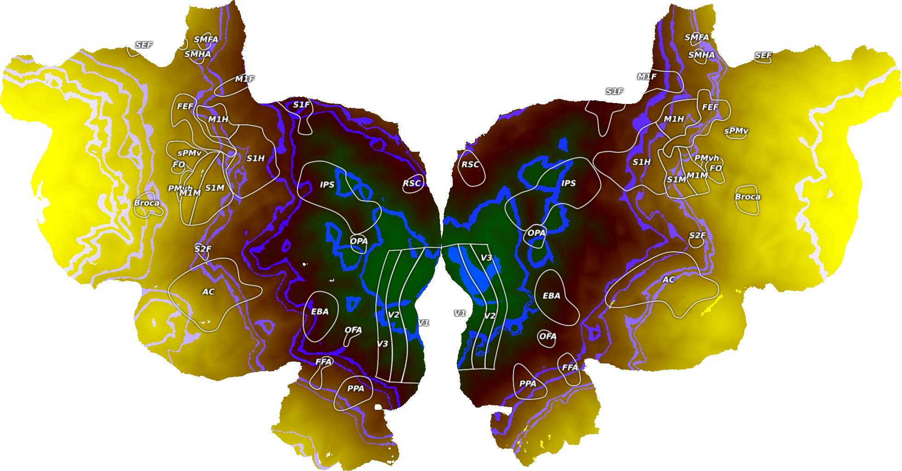

Note
Click here to download the full example code
Plot RGB Vertex Data¶
This plots example RGB vertex data onto an example subject, S1, onto a flatmap using quickflat. In order for this to run, you have to have a flatmap for this subject in the pycortex filestore.
The cortex.VertexRGB object is instantiated with three cortex.Vertex objects, one for each of the three color channels. Ideally, the data in the Volume objects will be scaled to be between 0-255 and be np.uint8 type.
Here, two datasets are generated to look like gradients across the brain and a third dataset makes a series of random stripes across the brain. You can use any cortex.Vertex objects in their place though.
import cortex
import cortex.polyutils
import numpy as np
np.random.seed(1234)
import matplotlib.pyplot as plt
subject = 'S1'
# In order to get the number of vertices in this subject's cortical surface
# we have to load in their surfaces and get the number of points in each
surfs = [cortex.polyutils.Surface(*d)
for d in cortex.db.get_surf(subject, "fiducial")]
# This is the total number of vertices in the left and right hemispheres
num_verts = [s.pts.shape[0] for s in surfs]
# Creating one fake dataset that is basically a gradient across each
# hemisphere based on vertex number
test1 = np.hstack((np.arange(num_verts[0]), np.arange(num_verts[1])))
# Picking a different vertex in each hemisphere to create another fake
# gradient away from that vertex
second_verts = [n / 4 for n in num_verts]
test2 = np.hstack((np.abs(np.arange(num_verts[0]) - second_verts[0]),
np.abs(np.arange(num_verts[1]) - second_verts[1])))
# Creating a third dataset that is random stripes
third_verts = np.random.randint(num_verts[0] + num_verts[1], size=(20,))
test3 = np.zeros(num_verts[0] + num_verts[1])
for v in third_verts:
test3[v-1000: v+1000] = 1
# Scaling the three datasets to be between 0-255
test1_scaled = test1 / np.max(test1) * 255
test2_scaled = test2 / np.max(test2) * 255
test3_scaled = test3 / np.max(test3) * 255
# Creating three cortex.Volume objects with the test data as np.uint8
red = cortex.Vertex(test1_scaled, subject)
green = cortex.Vertex(test2_scaled, subject)
blue = cortex.Vertex(test3_scaled, subject)
# This creates a 2D Vertex object with both of our test datasets for the
# given subject
vertex_data = cortex.VertexRGB(red, green, blue, subject)
cortex.quickshow(vertex_data, with_colorbar=False)
plt.show()
Total running time of the script: ( 0 minutes 2.635 seconds)